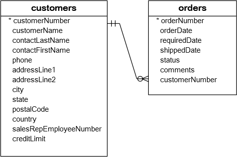

MySQL 别名(alias)
在本教程中，您将学习如何使用MySQL别名来提高查询的可读性。
MySQL支持两种别名，称为列别名和表别名。下面来详细看看和学习MySQL中的别名。
MySQL列的别名
有时，列的名称是一些表达式，使查询的输出很难理解。要给列一个描述性名称，可以使用列别名。
以下语句说明了如何使用列别名：
SELECT
[column_1 | expression] AS descriptive_name
FROM table_name;
要给列添加别名，可以使用AS关键词后跟别名。 如果别名包含空格，则必须引用以下内容：
SELECT
[column_1 | expression] AS `descriptive name`
FROM table_name;
因为AS关键字是可选的，可以在语句中省略它。 请注意，还可以在表达式上使用别名。
示例
我们来看看示例数据库中的employees表，其表结构如下所示 -
desc employees;
以下查询选择员工的名字和姓氏，并将其组合起来生成全名。 CONCAT_WS函数用于连接名字和姓氏。
SELECT
CONCAT_WS(', ', lastName, firstname)
FROM
employees;
在上面示例中，列标题很难阅读理解。可以为输出的标题分配一个有意义的列别名，以使其更可读，如以下查询：
SELECT
CONCAT_WS(', ', lastName, firstname) AS `Full name`
FROM
employees;
在MySQL中，可以使用ORDER BY，GROUP BY和HAVING子句中的列别名来引用该列。
以下查询使用ORDER BY子句中的列别名按字母顺序排列员工的全名：
SELECT
CONCAT_WS(' ', lastName, firstname) `Full name`
FROM
employees
ORDER BY
`Full name`;
以下语句查询总金额大于60000的订单。它在GROUP BY和HAVING子句中使用列别名。
SELECT
orderNumber `Order no.`,
SUM(priceEach * quantityOrdered) total
FROM
orderdetails
GROUP BY
`Order no.`
HAVING
total > 60000;
请注意，不能在WHERE子句中使用列别名。原因是当MySQL评估求值
WHERE子句时，SELECT子句中指定的列的值可能尚未确定。
MySQL表的别名
可以使用别名为表添加不同的名称。使用AS关键字在表名称分配别名，如下查询语句语法：
table_name AS table_alias
该表的别名称为表别名。像列别名一样，AS关键字是可选的，所以完全可以省略它。
一般在包含INNER JOIN，LEFT JOIN，self join子句和子查询的语句中使用表别名。
下面来看看客户(customers)和订单(orders)表，它们的ER图如下所示 -

两个表都具有相同的列名称：customerNumber。如果不使用表别名来指定是哪个表中的customerNumber列，则执行查询时将收到类似以下错误消息：
Error Code: 1052. Column 'customerNumber' in on clause is ambiguous
为避免此错误，应该使用表别名来限定customerNumber列：
SELECT
customerName,
COUNT(o.orderNumber) total
FROM
customers c
INNER JOIN orders o ON c.customerNumber = o.customerNumber
GROUP BY
customerName
HAVING total >=5
ORDER BY
total DESC;
上面的查询从客户(customers)和订单(orders)表中选择客户名称和订单数量。 它使用c作为customers表的表别名，o作为orders表的表别名。customers和orders表中的列通过表别名(c和o)引用。
如果您不在上述查询中使用别名，则必须使用表名称来引用其列，这样的会使得查询冗长且可读性较低，如下 -
SELECT
customers.customerName,
COUNT(orders.orderNumber) total
FROM
customers
INNER JOIN orders ON customers.customerNumber = orders.customerNumber
GROUP BY
customerName
ORDER BY
total DESC
在本教程中，我们向演示了如何使用MySQL别名，使查询更易于阅读和更易于理解。